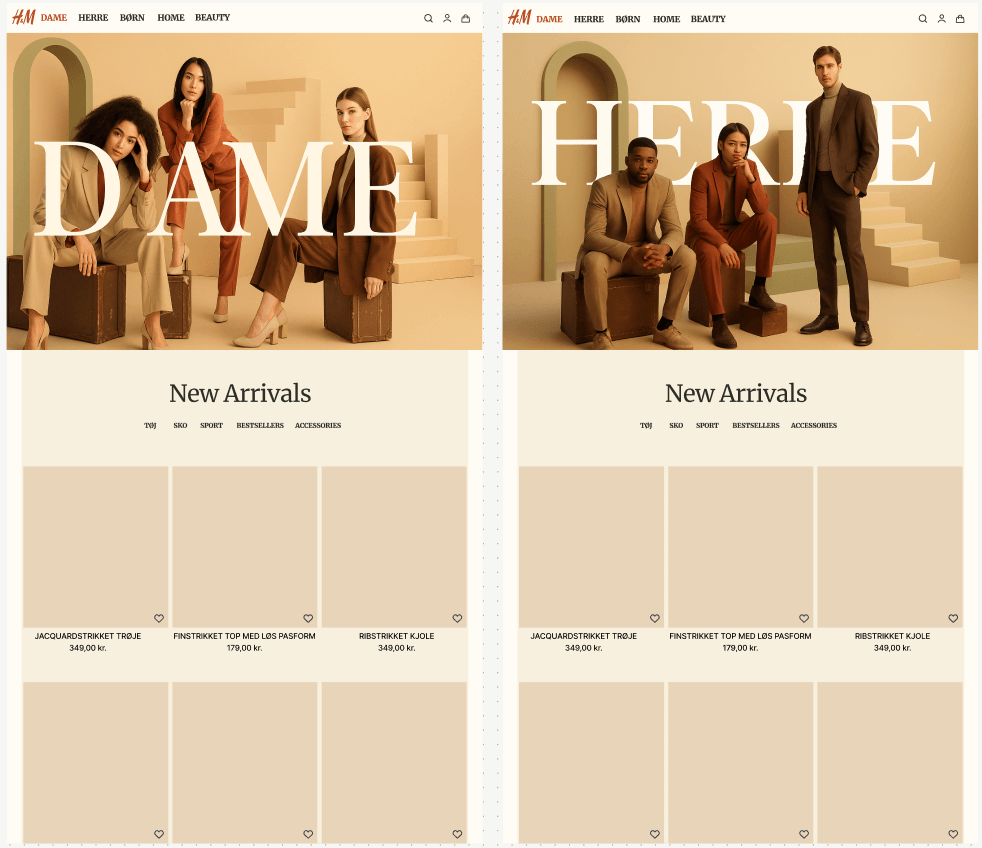
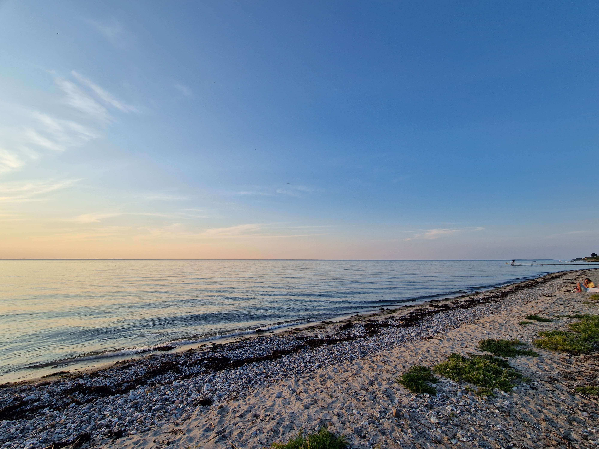
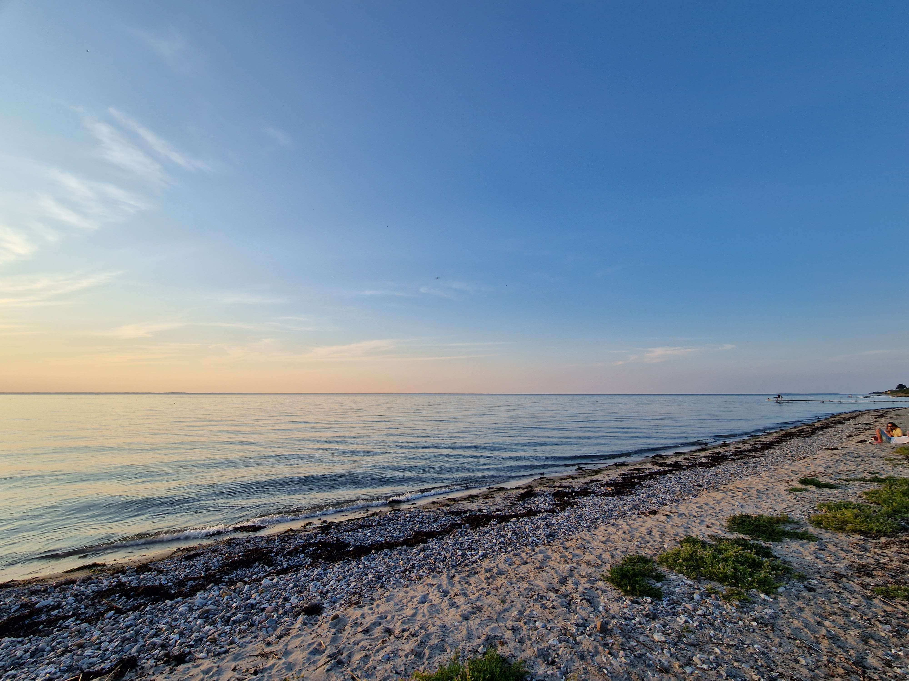
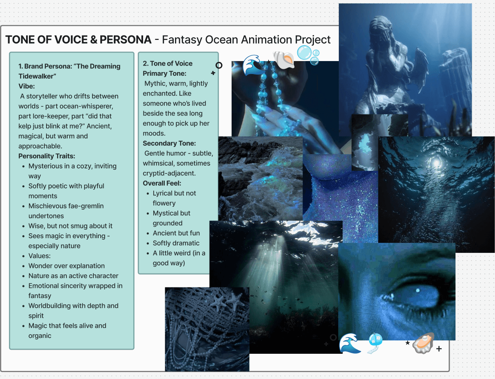

CSS Animation
I have hands-on experience creating CSS animations, and I enjoy experimenting with different effects to bring designs to life. The example below is a project I tried at home after class. It's a small demonstration of my ability to combine creativity with coding to produce smooth, engaging animations.
Style Tiles
For our first multimediadesign project, I focused on crafting the style tiles for our group's H&M redesign. I explored color palettes, typography, and visual elements to define a cohesive, modern, and functional aesthetic that guided the project's look and feel.
Illustration
A while back, I created four custom illustrations for my brother's website (can't show it just yet - it's still under wraps). The project was one of those classic "corporate website" vibes, but I got to bring a little extra personality into it. Even in a typically clean and professional context, I love finding ways to make visuals feel alive, approachable, and just a touch playful. It was a fun challenge to balance the usual structured, businessy style with something that really stands out. Each illustration had to be clear and functional, but I also made sure they had a spark of life that catches the eye.

I also had the pleasure of illustrating a logo for my brother's Lego team: THUNDERDUCK. Yup, you read that right. The project was short, sweet, and a total blast - sometimes the best creative challenges are the ones that don’t take themselves too seriously.
Animation
On the right you'll see a project from my coursework exploring CSS animation techniques. It's a clean, experimental piece that allowed me to push the boundaries of interactivity and understand the technical side of motion design.
On the left, there’s a more recent personal project from the past year. This piece leans into a more artistic, expressive approach - blending style, narrative, and motion to create an engaging, visually rich experience. It reflects my ability to balance technical skill with creative vision.
Photography
I love capturing the world around me through my lens, with a special focus on nature and the subtle details of everyday environments. Whether it's the quiet beauty of a forest, the glow of a sunset, or the textures of urban life, photography allows me to explore and preserve moments that inspire me.
 

Tone of Voice
For this project, I created this fantasy-ocean world with elves, sea creatures, and cryptids in mind. I developed a persona and tone of voice to match the vibes in Figma, and curated visuals and references to make everything feel cohesive and alive.
